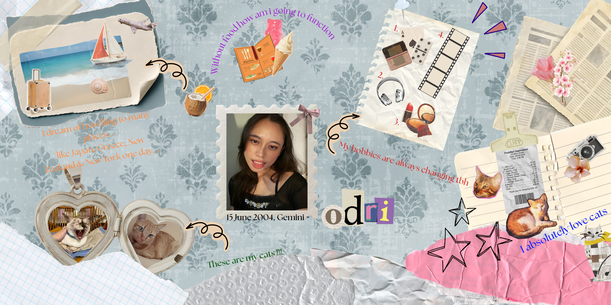

Wildlife Tracking & Reporting Systems
Academic CourseworkA console-based data tracking system built to report and monitor wildlife populations.
Open to internship opportunities
•┈••✦ ❤ ✦••┈• •┈••✦ ❤ ✦••┈•
Age: 22 years old
D.O.B: 15 June 2004
Major: 3rd Year in Network Computing
Current CGPA: 3.09
Address: Kuching, Sarawak
Currently looking for an internship in networking, IT support or software development, where I can apply what I've learned in class and keep growing through hands-on experience.
I am a fast learner in any tasks given varying in IT, Business and Documentations. I love learning many languages in hopes to get to know more people and able to be useful to translate any inquiries.
I would also like to look for more opportunities to experience on Cybersecurity and Network Administration related works.
Seeking an internship in networking, IT support, basic cybersecurity or software development. Here is the background I bring.
Honors: Dean's List Award, 2025/2026-1
Studying networking, programming, databases, operating systems and computer security. My coursework projects are listed in the Projects section.
Taken subjects in History, Business studies.
CGPA: 2.58
Achieved an A in English (CEFR B2 level) and an A in Science.
Learned time management skills alternating between work and study. Solving transaction issues internally and externally.
Processed cash, card and e-wallet transactions accurately on a POS system, kept the cash drawer balanced every shift and resolved shopper enquiries in a busy store. Built accuracy, accountability and the ability to stay calm under pressure.
Co-founded a student-led brownie micro-venture on campus. Handled sales, order tracking, cash collection and customer feedback, and planned promotions with teammates.
Attended on how to create designs using Canva.
Supported team coordination and student community engagement, and helped with patchwork making before the event day.
Co-organised a faculty-wide "Going Zero Waste" initiative promoting proper handling of hazardous electronic waste, and presented group summaries on recycling.
Volunteered as a participant in a community blood donation drive at Sarawak General Hospital.
Organised student-led activities and bridged communication between the student body and school administration.
Carried out school-wide initiatives including the Recycling Campaign, the Herbal Garden Project and a Teacher's Retirement Celebration.
Tech Stack: C Language
Subject: Introduction to Programming
A console-based data tracking system built to report and monitor wildlife populations.
Tech Stack: UML / System Tools
Subject: System Analysis & Design
Comprehensive system specification covering system requirements, data flow and architecture.
Tech Stack: Logic Simulation
Subject: Computer Architecture
A specialized program modeling the core operational cycles and register execution of a Reduced Instruction Set Computing CPU.
Tech Stack: Cisco Packet Tracer
Subject: Communication & Computer Networks
An enterprise network design proposal mapping core communication hardware, VLANs and subnets tailored for target organizations.
Tech Stack: C++
Subject: Data Structure & Object-Oriented Programming
Object-oriented C++ solution managing secure patient health records, doctor appointments and hospital operations.
Tech Stack: XAMPP MySQL
Subject: Database Management Systems
A normalized relational database design modeling member profiles, instructor class schedules, subscriptions and transactions.
Tech Stack: Python
Subject: Object-Oriented Design
An object-oriented e-commerce system architecture connecting local farmers directly with consumers in Samarahan.
Tech Stack: C++ / Java
Subject: Operating Systems
An operating system simulation demonstrating time-slice CPU process scheduling and turnaround / waiting-time statistics.
Tech Stack: Java
Subject: Java Programming
A Java desktop application that educates users on the United Nations Sustainable Development Goals, focusing on SDG 14 (Life Below Water) and SDG 15 (Life on Land).
Tech Stack: Python / Machine Learning / Cybersecurity
Subject: Computer Security
A security implementation leveraging machine learning heuristics during MFA verification to mitigate password-guessing attacks.
Tech Stack: Figma
Subject: Human-Computer Interaction (HCI)
Request for Proposal (RFP) response for Sarawak's first homegrown EV brand, designing an ergonomic dashboard control panel following HCI principles.
Tech Stack: Linux / SQL / Python
Subject: Google Cousera
Learn foundational threat detection, risk management, network security, and incident response.
I'm open to internship opportunities. Reach me directly on any channel below, or send a message in the form.

ACI am someone who loves cats ≽^-⩊-^≼, fashion ✧₊⁺🕯⋆.˚୨ৎ, music 🎧ྀི♪⋆.✮ and with many other hobbies.
Look at this scrapbook I made ദ്ദി(ᵔᗜᵔ)